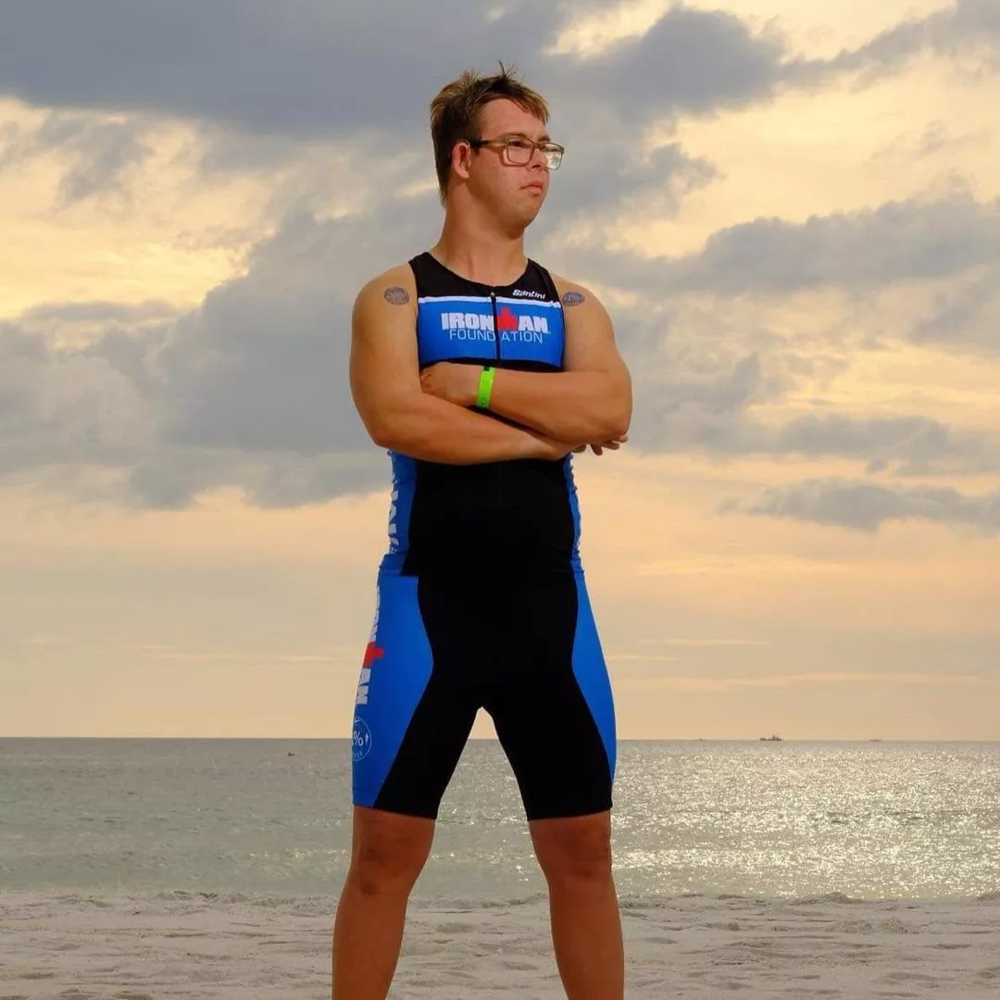
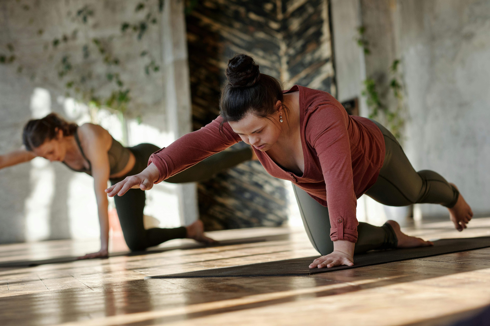

Esporte Inclusivo
Rompa barreiras através do esporte
Musculação e corrida adaptada para atletas com Síndrome de Down.
Sobre o Clube

Melhora do Tônus Muscular
Exercícios adaptados fortalecem músculos e melhoram a postura, combatendo a hipotonia característica da T21.

Autonomia e Confiança
Atividades físicas regulares aumentam a independência nas tarefas diárias e elevam a autoestima.

Socialização e Comunidade
Treinar em grupo cria laços de amizade e oferece um ambiente acolhedor e motivador.
Nossa Comunidade
Veja momentos inspiradores dos nossos treinos e conheça as histórias de superação



Fale Conosco
Tem alguma dúvida ? Envie uma mensagem!
© 2026 Clube T21. Todos os direitos reservados.
Promovendo saúde, autonomia e inclusão através do esporte adaptado.